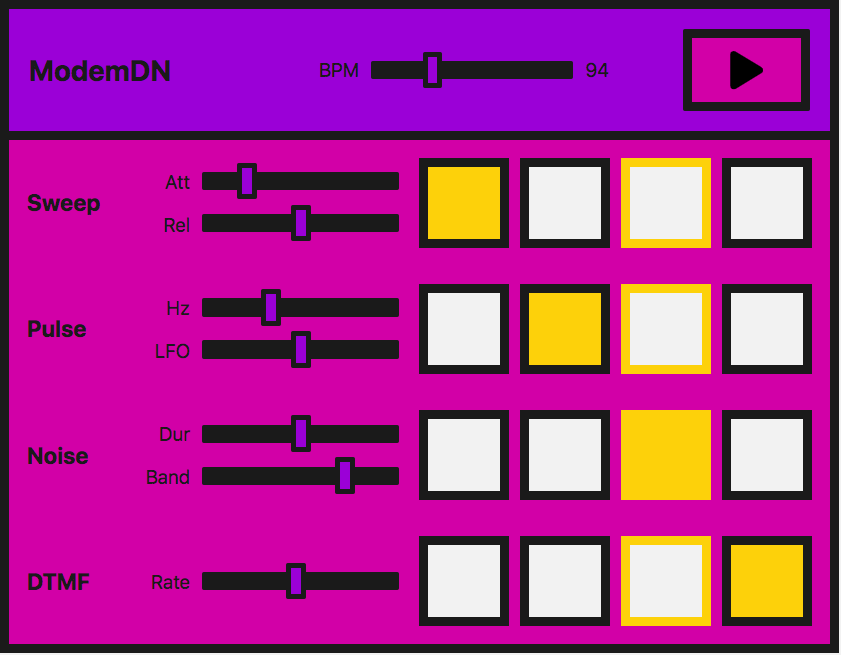

In this tutorial, we're going to cover sound creation and modification, as well as timing and scheduling. We're going to introduce sample loading, envelopes, filters, wavetables, and frequency modulation. If you're familiar with these terms and you're looking for an introduction to their application within with the Web Audio API, you've come to the right place.
Demo
We're going to be looking at a very simple step sequencer:

In practice this is easier to do with a library — the Web Audio API was built to be built upon. If you are about to embark on building something more complex, tone.js would be a good place to start. However, we want to demonstrate how to build such a demo from first principles, as a learning exercise.
Note: You can find the source code on GitHub as step-sequencer; see the step-sequencer running live also.
The interface consists of master controls, which allow us to play/stop the sequencer, and adjust the BPM (beats per minute) to speed up or slow down the "music".
There are four different sounds, or voices, which can be played. Each voice has four buttons, which represent four beats in one bar of music. When they are enabled the note will sound. When the instrument plays, it will move across this set of beats and loop the bar.
Each voice also has local controls, which allow you to manipulate the effects or parameters particular to each technique we are using to create those voices. The techniques we are using are:
| Name of voice | Technique | Associated Web Audio API feature |
|---|---|---|
| "Sweep" | Oscillator, periodic wave | OscillatorNode, PeriodicWave |
| "Pulse" | Multiple oscillators | OscillatorNode |
| "Noise" | Random noise buffer, Biquad filter | AudioBuffer, AudioBufferSourceNode, BiquadFilterNode |
| "Dial up" | Loading a sound sample to play | AudioContext.decodeAudioData(), AudioBufferSourceNode |
Note: This instrument was not created to sound good, it was created to provide demonstration code and represents a very simplified version of such an instrument. The sounds are based on a dial-up modem. If you are unaware of how one sounds you can listen to one here.
Creating an audio context
As you should be used to by now, each Web Audio API app starts with an audio context:
// for cross browser compatibility const AudioContext = window.AudioContext || window.webkitAudioContext; const audioCtx = new AudioContext();
The "sweep" — oscillators, periodic waves, and envelopes
For what we will call the "sweep" sound, that first noise you hear when you dial up, we're going to create an oscillator to generate the sound.
The OscillatorNode comes with basic waveforms out of the box — sine, square, triangle or sawtooth. However, instead of using the standard waves that come by default, we're going to create our own using the PeriodicWave interface and values set in a wavetable. We can use the BaseAudioContext.createPeriodicWave method to use this custom wave with an oscillator.
The periodic wave
First of all, we'll create our periodic wave. To do so, We need to pass real and imaginary values into the BaseAudioContext.createPeriodicWave() method.:
let wave = audioCtx.createPeriodicWave(wavetable.real, wavetable.imag);
Note: In our example the wavetable is held in a separate JavaScript file (wavetable.js), because there are so many values. It is taken from a repository of wavetables, which can be found in the Web Audio API examples from Google Chrome Labs.
The Oscillator
Now we can create an OscillatorNode and set its wave to the one we've created:
function playSweep() {
let osc = audioCtx.createOscillator();
osc.setPeriodicWave(wave);
osc.frequency.value = 440;
osc.connect(audioCtx.destination);
osc.start();
osc.stop(audioCtx.currentTime + 1);
}
Controlling amplitude
This is great, but wouldn't it be nice if we had an amplitude envelope to go with it? Let's create a simple one so we get used to the methods we need to create an envelope with the Web Audio API.
Let's say our envelope has attack and release. We can allow the user to control these using range inputs on the interface:
<label for="attack">Attack</label> <input name="attack" id="attack" type="range" min="0" max="1" value="0.2" step="0.1" /> <label for="release">Release</label> <input name="release" id="release" type="range" min="0" max="1" value="0.5" step="0.1" />
Now we can create some variables over in JavaScript and have them change when the input values are updated:
let attackTime = 0.2;
const attackControl = document.querySelector('#attack');
attackControl.addEventListener('input', function() {
attackTime = Number(this.value);
}, false);
let releaseTime = 0.5;
const releaseControl = document.querySelector('#release');
releaseControl.addEventListener('input', function() {
releaseTime = Number(this.value);
}, false);
The final playSweep() function
Now we can expand our playSweep() function. We need to add a GainNode and connect that through our audio graph to actually apply amplitude variations to our sound. The gain node has one property: gain, which is of type AudioParam.
This is really useful — now we can start to harness the power of the audio param methods on the gain value. We can set a value at a certain time, or we can change it over time with methods such as AudioParam.linearRampToValueAtTime.
For our attack and release, we'll use the linearRampToValueAtTime method as mentioned above. It takes two parameters — the value you want to set the parameter you are changing to (in this case the gain) and when you want to do this. In our case when is controlled by our inputs. So in the example below the gain is being increased to 1, at a linear rate, over the time the attack range input has been set to. Similarly, for our release, the gain is being set to 0, at a linear rate, over the time the release input has been set to.
let sweepLength = 2;
function playSweep() {
let osc = audioCtx.createOscillator();
osc.setPeriodicWave(wave);
osc.frequency.value = 440;
let sweepEnv = audioCtx.createGain();
sweepEnv.gain.cancelScheduledValues(audioCtx.currentTime);
sweepEnv.gain.setValueAtTime(0, audioCtx.currentTime);
// set our attack
sweepEnv.gain.linearRampToValueAtTime(1, audioCtx.currentTime + attackTime);
// set our release
sweepEnv.gain.linearRampToValueAtTime(0, audioCtx.currentTime + sweepLength - releaseTime);
osc.connect(sweepEnv).connect(audioCtx.destination);
osc.start();
osc.stop(audioCtx.currentTime + sweepLength);
}
Note: We'll talk about the property BaseAudioContext.currentTime later, so don't worry if you're unsure of it for now. All you really need to know is that it returns the time we are at right now.
The "pulse" — low frequency oscillator modulation
Great, now we've got our sweep! Let's move on and take a look at that nice pulse sound. We can achieve this with a basic oscillator, modulated with a second oscillator.
Initial oscillator
We'll set up our first OscillatorNode the same way as our sweep sound, except we won't use a wavetable to set a bespoke wave — we'll just use the default sine wave:
let osc = audioCtx.createOscillator(); osc.type = 'sine'; osc.frequency.value = 880;
Now we're going to create a GainNode, as it's the gain value that we will oscillate with our second, low frequency oscillator:
let amp = audioCtx.createGain(); amp.gain.setValueAtTime(1, audioCtx.currentTime);
Creating the second, low frequency, oscillator
We'll now create a second — square — wave (or pulse) oscillator, to alter the amplification of our first sine wave:
let lfo = audioCtx.createOscillator(); lfo.type = 'square'; lfo.frequency.value = 30;
Connecting the graph
The key here is connecting the graph correctly, and also starting both oscillators:
lfo.connect(amp.gain); osc.connect(amp).connect(audioCtx.destination); lfo.start(); osc.start(); osc.stop(audioCtx.currentTime + pulseTime);
Note: We also don't have to use the default wave types for either of these oscillators we're creating — we could use a wavetable and the periodic wave method as we did before. There is a multitude of possibilities with just a minimum of nodes.
Pulse user controls
For the UI controls, let's expose both frequencies of our oscillators, allowing them to be controlled via range inputs. One will change the tone and the other will change how the pulse modulates the first wave:
<label for="hz">Hz</label> <input name="hz" id="hz" type="range" min="660" max="1320" value="880" step="1" /> <label for="lfo">LFO</label> <input name="lfo" id="lfo" type="range" min="20" max="40" value="30" step="1" />
As before, we'll vary the parameters when the range input values are changed by the user.
let pulseHz = 880;
const hzControl = document.querySelector('#hz');
hzControl.addEventListener('input', function() {
pulseHz = Number(this.value);
}, false);
let lfoHz = 30;
const lfoControl = document.querySelector('#lfo');
lfoControl.addEventListener('input', function() {
lfoHz = Number(this.value);
}, false);
The final playPulse() function
Here's the entire playPulse() function:
let pulseTime = 1;
function playPulse() {
let osc = audioCtx.createOscillator();
osc.type = 'sine';
osc.frequency.setValueAtTime(pulseHz, audioCtx.currentTime);
let amp = audioCtx.createGain();
amp.gain.setValueAtTime(1, audioCtx.currentTime);
let lfo = audioCtx.createOscillator();
lfo.type = 'square';
lfo.frequency.setValueAtTime(lfoHz, audioCtx.currentTime);
lfo.connect(amp.gain);
osc.connect(amp).connect(audioCtx.destination);
lfo.start();
osc.start();
osc.stop(audioCtx.currentTime + pulseTime);
}
The "noise" — random noise buffer with biquad filter
Now we need to make some noise! All modems have noise. Noise is just random numbers when it comes to audio data, so is, therefore, a relatively straightforward thing to create with code.
Creating an audio buffer
We need to create an empty container to put these numbers into, however, one that the Web Audio API understands. This is where AudioBuffer objects come in. You can fetch a file and decode it into a buffer (we'll get to that later on in the tutorial), or you can create an empty buffer and fill it with your own data.
For noise, let's do the latter. We first need to calculate the size of our buffer, to create it. We can use the BaseAudioContext.sampleRate property for this:
const bufferSize = audioCtx.sampleRate * noiseLength; const buffer = audioCtx.createBuffer(1, bufferSize, audioCtx.sampleRate);
Now we can fill it with random numbers between -1 and 1:
let data = buffer.getChannelData(0); // get data
// fill the buffer with noise
for (let i = 0; i < bufferSize; i++) {
data[i] = Math.random() * 2 - 1;
}
Note: Why -1 to 1? When outputting sound to a file or speakers we need to have a number to represent 0db full scale — the numerical limit of the fixed point media or DAC. In floating point audio, 1 is a convenient number to map to "full scale" for mathematical operations on signals, so oscillators, noise generators and other sound sources typically output bipolar signals in the range -1 to 1. A browser will clamp values outside this range.
Creating a buffer source
Now we have the audio buffer and have filled it with data, we need a node to add to our graph that can use the buffer as a source. We'll create a AudioBufferSourceNode for this, and pass in the data we've created:
let noise = audioCtx.createBufferSource(); noise.buffer = buffer;
If we connect this through our audio graph and play it —
noise.connect(audioCtx.destination); noise.start();
you'll notice that it's pretty hissy or tinny. We've created white noise, that's how it should be. Our values are running from -1 to 1, which means we have peaks of all frequencies, which in turn is actually quite dramatic and piercing. We could modify the function to run values from 0.5 to -0.5 or similar to take the peaks off and reduce the discomfort, however, where's the fun in that? Let's route the noise we've created through a filter.
Adding a biquad filter to the mix
We want something in the range of pink or brown noise. We want to cut off those high frequencies and possibly some of the lower ones. Let's pick a bandpass biquad filter for the job.
Note: The Web Audio API comes with two types of filter nodes: BiquadFilterNode and IIRFilterNode. For the most part a biquad filter will be good enough — it comes with different types such as lowpass, highpass, and bandpass. If you're looking to do something more bespoke, however, the IIR filter might be a good option — see Using IIR filters for more information.
Wiring this up is the same as we've seen before. We create the BiquadFilterNode, configure the properties we want for it and connect it through our graph. Different types of biquad filters have different properties — for instance setting the frequency on a bandpass type adjusts the middle frequency, however on a lowpass it would set the top frequency.
let bandpass = audioCtx.createBiquadFilter(); bandpass.type = 'bandpass'; bandpass.frequency.value = 1000; // connect our graph noise.connect(bandpass).connect(audioCtx.destination);
Noise user controls
On the UI we'll expose the noise duration and the frequency we want to band, allowing the user to adjust them via range inputs and event handlers just like in previous sections:
<label for="duration">Duration</label> <input name="duration" id="duration" type="range" min="0" max="2" value="1" step="0.1" /> <label for="band">Band</label> <input name="band" id="band" type="range" min="400" max="1200" value="1000" step="5" />
let noiseDuration = 1;
const durControl = document.querySelector('#duration');
durControl.addEventListener('input', function() {
noiseDuration = Number(this.value);
}, false);
let bandHz = 1000;
const bandControl = document.querySelector('#band');
bandControl.addEventListener('input', function() {
bandHz = Number(this.value);
}, false);
The final playNoise() function
Here's the entire playNoise() function:
function playNoise() {
const bufferSize = audioCtx.sampleRate * noiseDuration; // set the time of the note
const buffer = audioCtx.createBuffer(1, bufferSize, audioCtx.sampleRate); // create an empty buffer
let data = buffer.getChannelData(0); // get data
// fill the buffer with noise
for (let i = 0; i < bufferSize; i++) {
data[i] = Math.random() * 2 - 1;
}
// create a buffer source for our created data
let noise = audioCtx.createBufferSource();
noise.buffer = buffer;
let bandpass = audioCtx.createBiquadFilter();
bandpass.type = 'bandpass';
bandpass.frequency.value = bandHz;
// connect our graph
noise.connect(bandpass).connect(audioCtx.destination);
noise.start();
}
"Dial up" — loading a sound sample
It's straightforward enough to emulate phone dial (DTMF) sounds, by playing a couple of oscillators together using the methods we've already looked at, however, in this section, we'll load in a sample file instead so we can take a look at what's involved.
Loading the sample
We want to make sure our file has loaded and been decoded into a buffer before we use it, so let's create an async function to allow us to do this:
async function getFile(audioContext, filepath) {
const response = await fetch(filepath);
const arrayBuffer = await response.arrayBuffer();
const audioBuffer = await audioContext.decodeAudioData(arrayBuffer);
return audioBuffer;
}
We can then use the await operator when calling this function, which ensures that we can only run subsequent code when it has finished executing.
Let's create another async function to set up the sample — we can combine the two async functions in a nice promise pattern to perform further actions when this file is loaded and buffered:
async function setupSample() {
const filePath = 'dtmf.mp3';
const sample = await getFile(audioCtx, filePath);
return sample;
}
Note: You can easily modify the above function to take an array of files and loop over them to load more than one sample. This would be very handy for more complex instruments, or gaming.
We can now use setupSample() like so:
setupSample()
.then((sample) => {
// sample is our buffered file
// ...
});
When the sample is ready to play, the program sets up the UI so it is ready to go.
Playing the sample
Let's create a playSample() function in a similar manner to how we did with the other sounds. This time it will create an AudioBufferSourceNode, and put the buffer data we've fetched and decoded into it, and play it:
function playSample(audioContext, audioBuffer) {
const sampleSource = audioContext.createBufferSource();
sampleSource.buffer = audioBuffer;
sampleSource.connect(audioContext.destination)
sampleSource.start();
return sampleSource;
}
Note: We can call stop() on an AudioBufferSourceNode, however, this will happen automatically when the sample has finished playing.
Dial-up user controls
The AudioBufferSourceNode comes with a playbackRate property. Let's expose that to our UI, so we can speed up and slow down our sample. We'll do that in the same sort of way as before:
<label for="rate">Rate</label> <input name="rate" id="rate" type="range" min="0.1" max="2" value="1" step="0.1" />
let playbackRate = 1;
const rateControl = document.querySelector('#rate');
rateControl.addEventListener('input', function() {
playbackRate = Number(this.value);
}, false);
The final playSample() function
We'll then add a line to update the playbackRate property to our playSample() function. The final version looks like this:
function playSample(audioContext, audioBuffer) {
const sampleSource = audioContext.createBufferSource();
sampleSource.buffer = audioBuffer;
sampleSource.playbackRate.setValueAtTime(playbackRate, audioCtx.currentTime);
sampleSource.connect(audioContext.destination)
sampleSource.start();
return sampleSource;
}
Note: The sound file was sourced from soundbible.com.
Playing the audio in time
A common problem with digital audio applications is getting the sounds to play in time so that the beat remains consistent, and things do not slip out of time.
AudioContext object instances have a currentTime property, which allows us to retrieve the number of seconds after we first created the context. This is what we shall use for timing within our step sequencer — It's extremely accurate, returning a float value accurate to about 15 decimal places.
We could schedule our voices to play within a for loop, however the biggest problem with this is updating whilst it is playing, and we've already implemented UI controls to do so. Also, it would be really nice to consider an instrument-wide BPM control. The best way to get our voices to play on the beat is to create a scheduling system, whereby we look ahead at when the notes are going to play and push them into a queue. We can start them at a precise time with the currentTime property and also take into account any changes.
Note: This is a much stripped down version of Chris Wilson's A Tale Of Two Clocks article, which goes into this method in much more detail. There's no point repeating it all here, but it's highly recommended to read this article and use this method. Much of the code here is taken from his metronome example, which he references in said article.
Let's start by setting up our default BPM (beats per minute), which will also be user-controllable via — you guessed it — another range input.
let tempo = 60.0;
const bpmControl = document.querySelector('#bpm');
bpmControl.addEventListener('input', function() {
tempo = Number(this.value);
}, false);
Then we'll create variables to define how far ahead we want to look, and how far ahead we want to schedule:
let lookahead = 25.0; // How frequently to call scheduling function (in milliseconds) let scheduleAheadTime = 0.1; // How far ahead to schedule audio (sec)
Let's create a function that moves the note forwards by one beat, and loops back to the first when it reaches the 4th (last) one:
let currentNote = 0;
let nextNoteTime = 0.0; // when the next note is due.
function nextNote() {
const secondsPerBeat = 60.0 / tempo;
nextNoteTime += secondsPerBeat; // Add beat length to last beat time
// Advance the beat number, wrap to zero
currentNote++;
if (currentNote === 4) {
currentNote = 0;
}
}
We want to create a reference queue for the notes that are to be played, and the functionality to play them using the functions we've previously created:
const notesInQueue = [];
function scheduleNote(beatNumber, time) {
// push the note on the queue, even if we're not playing.
notesInQueue.push({ note: beatNumber, time: time });
if (pads[0].querySelectorAll('button')[currentNote].getAttribute('aria-checked') === 'true') {
playSweep()
}
if (pads[1].querySelectorAll('button')[currentNote].getAttribute('aria-checked') === 'true') {
playPulse()
}
if (pads[2].querySelectorAll('button')[currentNote].getAttribute('aria-checked') === 'true') {
playNoise()
}
if (pads[3].querySelectorAll('button')[currentNote].getAttribute('aria-checked') === 'true') {
playSourceNode(audioCtx, sample);
}
}
Here we look at the current time and compare it to the time for the next note; when the two match it will call the previous two functions.
function scheduler() {
// while there are notes that will need to play before the next interval, schedule them and advance the pointer.
while (nextNoteTime < audioCtx.currentTime + scheduleAheadTime ) {
scheduleNote(currentNote, nextNoteTime);
nextNote();
}
timerID = window.setTimeout(scheduler, lookahead);
}
We also need a draw function to update the UI, so we can see when the beat progresses.
let lastNoteDrawn = 3;
function draw() {
let drawNote = lastNoteDrawn;
let currentTime = audioCtx.currentTime;
while (notesInQueue.length && notesInQueue[0].time < currentTime) {
drawNote = notesInQueue[0].note;
notesInQueue.splice(0,1); // remove note from queue
}
// We only need to draw if the note has moved.
if (lastNoteDrawn != drawNote) {
pads.forEach(function(el, i) {
el.children[lastNoteDrawn].style.borderColor = 'hsla(0, 0%, 10%, 1)';
el.children[drawNote].style.borderColor = 'hsla(49, 99%, 50%, 1)';
});
lastNoteDrawn = drawNote;
}
// set up to draw again
requestAnimationFrame(draw);
}
Putting it all together
Now all that's left to do is make sure we've loaded the sample before we are able to play the instrument. We'll add a loading screen that disappears when the file has been fetched and decoded, then we can allow the scheduler to start using the play button click event.
// when the sample has loaded allow play
let loadingEl = document.querySelector('.loading');
const playButton = document.querySelector('[data-playing]');
let isPlaying = false;
setupSample()
.then((sample) => {
loadingEl.style.display = 'none'; // remove loading screen
dtmf = sample; // to be used in our playSample function
playButton.addEventListener('click', function() {
isPlaying = !isPlaying;
if (isPlaying) { // start playing
// check if context is in suspended state (autoplay policy)
if (audioCtx.state === 'suspended') {
audioCtx.resume();
}
currentNote = 0;
nextNoteTime = audioCtx.currentTime;
scheduler(); // kick off scheduling
requestAnimationFrame(draw); // start the drawing loop.
this.dataset.playing = 'true';
} else {
window.clearTimeout(timerID);
this.dataset.playing = 'false';
}
})
});
Summary
We've now got an instrument inside our browser! Keep playing and experimenting — you can expand on any of these techniques to create something much more elaborate.